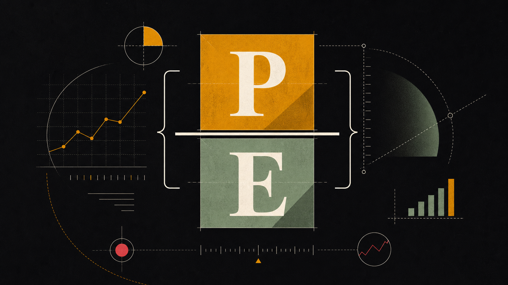
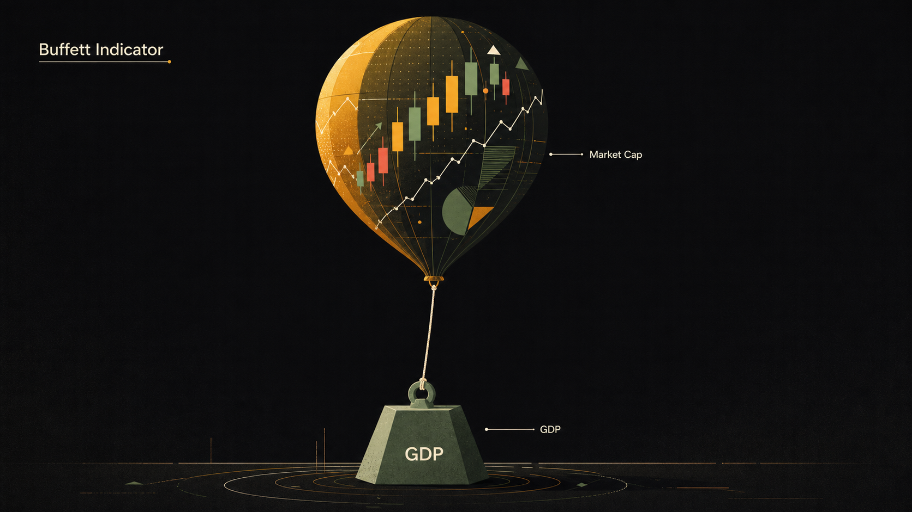

2021 年，特斯拉的市盈率（P/E）一度超过 1000 倍。按这个逻辑，买一块钱的特斯拉年盈利，你要付 1000 块。它值吗？要回答这个问题，你需要一套衡量价值的工具——这就是估值指标。
为什么要学估值：贵不贵，是个相对概念
「这只股票贵不贵？」——这是每个投资者都想知道的问题，也是最难直接回答的问题。
一只价格 $5 的股票可能很贵，一只价格 $500 的股票可能很便宜。价格本身什么都说明不了。你需要把价格和某个基本面数据挂钩——比较的是你花了多少钱，买到了多少「东西」。
举个生活中的例子：同样是一套房子，你不会只看总价，你还会看「每平方米多少钱」。每平方米单价，才是跨越地段、面积的可比指标。估值指标做的事情完全一样——把股价「归一化」到一个可以横向比较的维度。
市盈率 P/E：最常用也最容易误用
市盈率（Price-to-Earnings Ratio，P/E）是最广为人知的估值指标，也是被误用最多的。
理解它的最好方式是这个比喻：假设你考虑买下一家街角小店，这家店一年能净赚 10 万元。你愿意花多少钱买下它？如果你出价 200 万，那你就是以「20 倍 P/E」买入——意味着不考虑增长的情况下，你需要 20 年才能回本。
P/E 有三种常见版本，对应国内财经平台上常见的「静态/动态/TTM」叫法：
三者关系：动态 P/E 通常最低（用未来盈利除，分母最大），静态 P/E 最高，TTM 居中。比较两家公司时，一定要用同一种口径，否则很容易得出错误结论。
不同类型的公司，「正常」的 P/E 范围差异很大：
周期性行业是 P/E 最容易误导你的地方。以航运公司为例：2021 年集装箱运费爆涨，某航运公司当年 EPS 是 $20，股价 $60，P/E 只有 3 倍，看起来「极度便宜」。但这 $20 的 EPS 是行业景气高峰的一次性收益，2022 年运费暴跌后 EPS 回落到 $2，股价也随之崩塌。用景气高峰的 P/E 来判断「便宜」，结果是追顶。

市净率 P/B 和市销率 P/S
P/E 的前提是公司有盈利——对于亏损的公司，P/E 没有意义（负数）。这时候就需要其他指标。
市净率 P/B（Price-to-Book Ratio）
P/B 适合哪类公司？最适合银行、保险、地产等资产重型行业——这些公司的核心价值体现在资产负债表上（贷款组合、不动产、投资组合），用净资产来锚定价值是合理的。
P/B 不适合哪类？轻资产科技公司。谷歌的核心资产是搜索算法和工程师团队，这些在资产负债表上几乎不体现，账面净资产大幅低估了公司真实价值，P/B 会显得极高，但这不意味着「贵」。
市销率 P/S（Price-to-Sales Ratio）
P/S 在 2015–2021 年的 SaaS（软件即服务）热潮中被广泛使用。很多云软件公司烧钱扩张、尚未盈利，P/E 无意义，分析师用 P/S 来比较估值。然而 2022 年加息周期中，这些高 P/S 公司遭到了最惨烈的杀跌——从 P/S 30–50 倍跌回 5–10 倍，股价普遍腰斩到三折。
P/S 的使用要配合一个关键前提：公司的商业模式要有足够高的利润率潜力。营收没有意义，如果永远转化不成利润的话。
EV/EBITDA：更公平的跨公司比较
当你比较两家同行业公司的估值，P/E 有一个隐藏问题：它会被不同的资本结构扭曲。
举个例子：A 公司零负债，B 公司负债累累。B 公司每年要支付大量利息，导致净利润被压低，P/E 反而「显得」更高，像是更贵。但这不公平——两家公司的经营能力可能完全一样，只是融资方式不同。
EV/EBITDA 解决了这个问题：
EBITDA 通俗理解：把利息支出、所得税、折旧、摊销都加回来，得到的是公司「纯经营层面赚了多少钱」，不受融资方式和会计政策影响。
EV（企业价值）则代表「如果你要完整收购这家公司，真正要付出多少」。你买下它，不仅要支付股票市价（市值），还要承接它的债务，但可以拿走它的现金——这就是 EV 的计算逻辑。
Buffett Indicator 和 CAPE：宏观视角
以上指标都是针对单一公司的微观估值。有时候你需要从宏观角度判断：整个市场是便宜还是贵？
Buffett Indicator（巴菲特指标）
Buffett Indicator 的逻辑：股票市场的总价值，长期来看不应该大幅偏离一个国家真实创造财富的能力（GDP）。当市值远超 GDP，意味着市场对未来的预期过于乐观，风险在积累。
CAPE（Shiller P/E，周期调整市盈率）
为什么要用 10 年平均而不是当年 EPS？因为经济有周期，当年 EPS 受景气程度影响巨大。用 10 年平均，可以平滑掉一个完整经济周期的波动，得到更稳定的估值基准。
CAPE 的局限是：它对市场时机的预测力很弱。CAPE 高达 30+ 倍时，市场可能还会再涨 5 年才见顶。它更适合作为长期风险的参考，而不是短期的买卖信号。

估值的局限：高 P/E 不一定贵
学到这里，你可能会觉得：找一只低 P/E 的股票买入，不就行了？如果这么简单，华尔街就不需要那么多分析师了。
估值指标的核心局限在于：它们是静态的，而公司是动态的。一只股票的「合理 P/E」，取决于它未来的增长速度。增长越快，合理的 P/E 越高。这就引出了一个更实用的指标——PEG（Price/Earnings-to-Growth）：
回到本章开头的特斯拉案例：2021 年特斯拉 P/E 超 1000 倍，看起来荒谬。但当时市场相信特斯拉的汽车交付量每年增长 50%+，并且会进入能源、软件、机器人等多个市场。这个预期如果实现，当年的利润会在几年内暴涨，1000 倍 P/E 会迅速收缩到合理区间。当然，如果预期不实现——2022 年我们就看到了结果。
Price is what you pay, value is what you get.
— Warren Buffett这句话的深意是：价格每天都在屏幕上跳动，但真正的价值来自公司创造现金流的能力——这不会每天变化，但市场的情绪会每天给它贴上不同的价格标签。估值分析，就是在这两者之间寻找差价。
数据来源：Bloomberg / Macrotrends 公开数据，以 TTM 口径计算，近似截至 2025 年底。仅供教育演示，不构成投资建议，实际数值请参考实时行情工具。
- 雷达图轴越靠外 = 估值倍数越高（越「贵」）。四个轴分别是 P/E、P/B、P/S、EV/EBITDA。
- AAPL vs MSFT（同为科技股）：微软的 P/E 和 P/S 更高，因市场对云业务增长的预期更强；苹果的 P/B 极高（轻资产+海量回购压缩了账面净资产），但 P/E 反而相对温和，说明苹果盈利能力极强。
- JPM（银行）vs 科技股：JPM 在所有指标上都紧贴圆心——银行是重资产、增长慢的成熟行业，市场给予低溢价。P/B 约 2 倍是银行业健康经营的正常区间。直接拿 JPM 和 AAPL 比 P/E 毫无意义，行业逻辑完全不同。
- TSLA（消费/科技混合）：P/E 和 EV/EBITDA 遥遥领先，代表市场在为「未来的特斯拉」付费，不是为今天的汽车盈利付费。这种高溢价一旦增长不及预期，就会剧烈回落。
- 核心结论：四家公司同时选中时，会看到四个重叠形状大小悬殊——这正是本章的核心教训：跨行业比较估值必须搭配行业背景，数字本身没有绝对的贵贱。
- 估值指标把价格归一化，让你比较「你花了多少钱，买到了多少价值」。所有估值指标只在同行业内比较才有意义。
- P/E = 股价 ÷ EPS，代表你花多少钱买 $1 的年盈利。周期股的 P/E 在景气高峰时反而最低，最具迷惑性。
- P/B 适合银行和重资产行业；P/S 适合高增长但暂时亏损的公司，但要注意利润率潜力。
- EV/EBITDA 消除了资本结构差异，是跨公司比较和并购分析最常用的工具。
- CAPE（Shiller P/E）用 10 年平均盈利平滑经济周期，是判断市场整体贵贱的更可靠工具。
- 高 P/E 不一定贵——PEG 指标把增长因素纳入考量，才是更完整的估值框架。
| 中文 | 英文 | 一句话解释 |
|---|---|---|
| 市盈率 | P/E (Price-to-Earnings) | 股价 ÷ 每股收益，衡量你为 $1 盈利付了多少钱 |
| 每股收益 | EPS (Earnings Per Share) | 公司净利润 ÷ 总股本，代表每股创造多少利润 |
| 市净率 | P/B (Price-to-Book) | 股价 ÷ 每股净资产，适合银行等重资产行业 |
| 市销率 | P/S (Price-to-Sales) | 市值 ÷ 年营收，适合亏损阶段的成长公司 |
| 企业价值 | EV (Enterprise Value) | 市值 + 净负债，代表收购整家公司的实际成本 |
| EV/EBITDA | EV/EBITDA | 消除资本结构差异的估值倍数，最适合跨公司比较 |
| 周期调整市盈率 | CAPE / Shiller P/E | 用 10 年平均盈利计算的 P/E，平滑经济周期 |
| 巴菲特指标 | Buffett Indicator | 全市场总市值 ÷ GDP，判断市场整体估值水平 |
市盈率（P/E）的计算公式是什么？
市净率（P/B）最适合用于评估哪类公司？
相比 P/E，EV/EBITDA 有什么优势？
CAPE（Shiller P/E）与普通 P/E 最大的不同是什么？